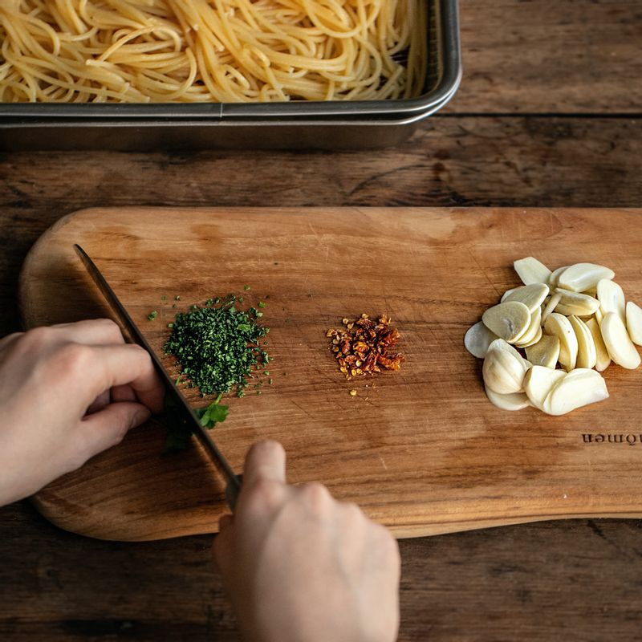
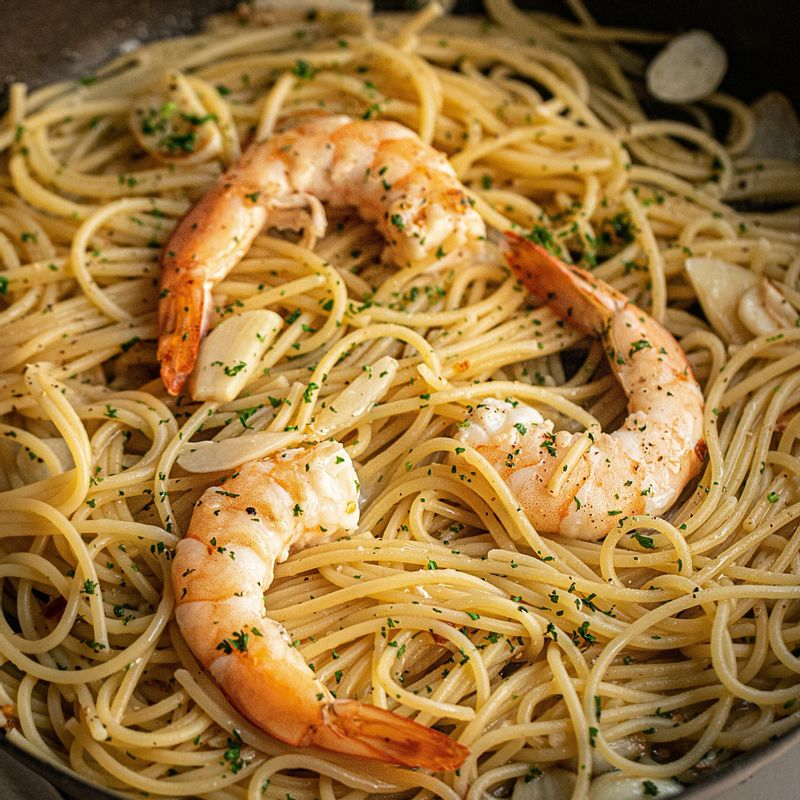
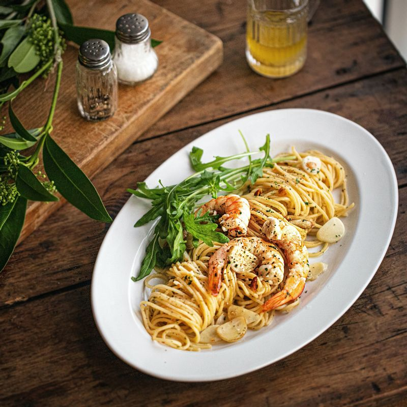

황정은/음식

저는 파스타를 정말정말 너무 좋아합니다. 파스타 중에서도 특히 오일파스타를 좋아하는데 거기에 새우까지 들어가면 정말 기절합니다.
아직 제가 스스로 만들어 본 적은 없지만 한번 만들어 볼까 싶은 김에 레시피를 적어두려고 합니다.

마늘은 편으로 썰고 페퍼론치노와 이태리파슬리는 굵게 다집니다. 새우는 머리를 떼고 꼬리만 남겨서 껍질을 제거해 손질합니다.

물 8컵에 소큼 1큰술을 넣고 6분정도 삶아줍니다. 넓은 그릇에 펼친 후 올리브오일을 뿌려줍니다. 이 때 면을 삶고 남은 면수는 1/3정도 남겨줍니다.

팬에 올리브오일을 두르고 마늘 편과 페퍼론치노를 넣어 소금과 후추로 밑간하여 볶아줍니다. 아까 손질해둔 새우도 넣어 마늘이 노릇노릇해질 때 까지 볶아줍니다.

삶은 스파게티 면을 넣고 다시한번 소금과 후추로 간을 하며 면과 소스가 겉돌지 않게 면수, 치킨스톡을 넣어주면서 볶아줍니다. 마지막에 약간의 올리브오일과 이태리파슬리를 뿌려주고 불을 끕니다.

그릇에 예쁘게 담아 먹으면 완성입니다.
알리오 올리오는 이탈리아 나폴리(캄파니아 지방)의 요리입니다. 이름에서 알 수 있듯이 알리오(마늘)와 올리오(기름, 특히 올리브유)가 핵심 재료인 요리로 정확한 명칭은 알리오 에 올리오 라고 합니다.
들어가는 재료가 적어 재료의 품질이 맛을 크게 좌지우지한다고 합니다. 아무래도 나중에 돈을 많이 벌고 나서나 혼자 만들어먹어보아야 할 것 같습니다.
출처: 우리의 식탁